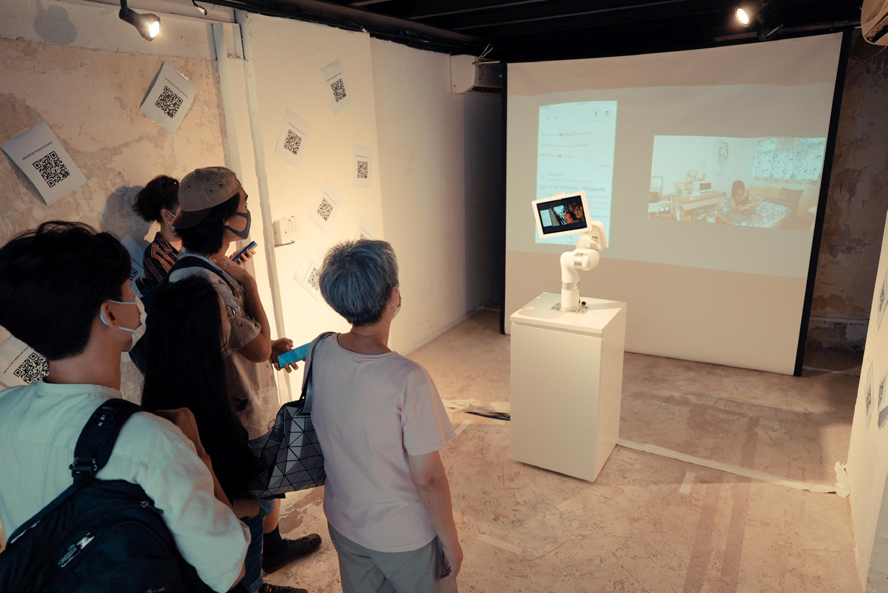
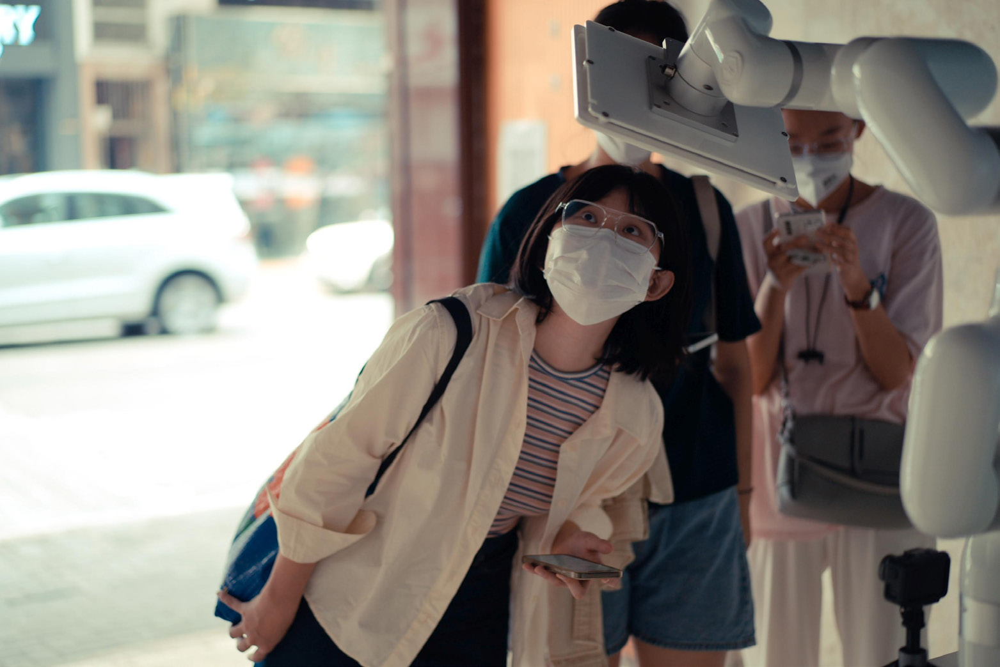

In/Active
IN/ACTive
Robot Dance, Exhibition Performance
2022/10
Hong Kong Arts Centre, ThyLab Hong Kong, Dagao Art Center Beijing, Hong Kong Arts Development Council
How long shall we be separated? How else might we break through? IN/ACTive explores the relationship between audiences and performers from distance, exploring how the classical venues for dialog between a seated audience and a staged performer can be transfigured into a physically embodied expression across a digital divide. It is an exploration of the way technology can bring presence to distanced expressive communication, transforming the classical staged performance with the help of robotics, camera technology, and internet-of-things to a nuanced, environment-centered narrative and physical expression behind the scenes in an artist’s studio.
Creative Director: RAY LC
Technical Director: Marco Lui
Curators: Star Sijia Liu, Lina Fan, Cheng Yang
Performers included in the exhibition: Florence Lam, Joseph Lee, Carmen Yu, Koala Yip, Ashley Leung.
Project Website: recfro.github.io
Exhibition Website: Exhibition website
Related Publication: IN/ACTive: A Distance-Technology-Mediated Stage for Performer-Audience Telepresence and Environmental Control (MM 23)



